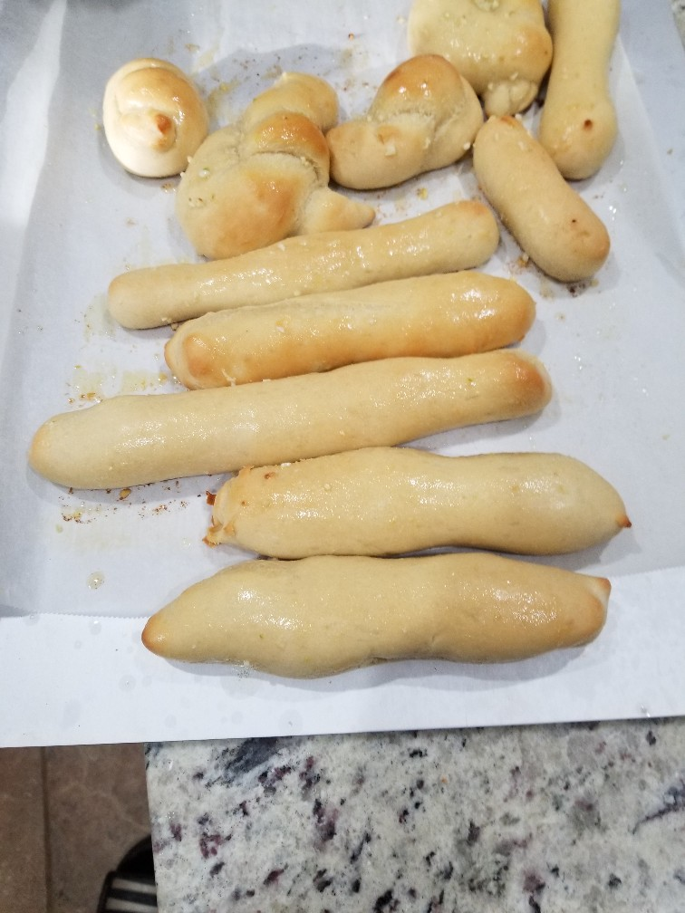

Quick Garlic Breadsticks
Originally adapted from: 'http://blessmynest.blogspot.com/' (blog dead)

Ingredients
- 4 cups all purpose flour (500 g)
- 2.5 tsp salt
- 2 Tbl sugar
- 1.5 cups water
- 2 1/4 tsp yeast
- 2 Tbl butter
- 6 Tbl garlic butter
Directions
- Combine all ingredients except garlic butter and knead until smooth
- Separate into 12 portions. Roll into breadsticks, or tie for garlic knots.
- Let rise for 30 - 45 minutes. Preheat oven to 400°
- Bake for 5 - 7 minutes then brush with garlic butter. Bake additional couple minutes, remove and brush with remaining garlic butter.
Notes
- 2020-08-02 - Have made a few times before to better results. Dough seemed very sticky this time, and never pulled away from bowl in stand mixer. Still turned out good, would like to test how a more standard double rise would change results. Quick single rise already gives crisp outside and decently tender inside. Apologies for bad picture.
